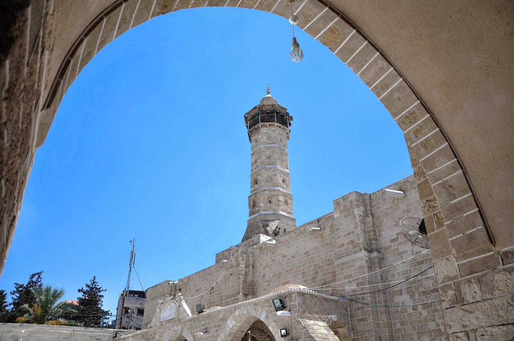

Ein Krieg tötet nicht nur Menschen. In Gaza ist auch zerstört, was eine Gesellschaft nach dem Krieg tragen müsste: 93 % der Schulgebäude müssen neu gebaut oder grundsaniert werden, 95 % der begutachteten Hochschulgebäude sind zerstört oder schwer beschädigt, die UNESCO hat Schäden an 164 Kulturstätten verifiziert, 87 % des Ackerlands sind beschädigt, über 61 Millionen Tonnen Trümmer liegen im Land, und keine einzige Kläranlage arbeitet. UN-Experten sprechen von „Scholastizid“, Forscher von „Ökozid“. Israel begründet die Angriffe mit der militärischen Nutzung durch die Hamas – in einzelnen Fällen belegt, in zentralen Fällen von der UN-Untersuchungskommission nicht bestätigt.
Auf dieser Website bereits ausführlich: die UN-Expertenerklärung zum „Scholasticide“ vom April 2024 unter Kriegsführung · Archive, Bibliotheken und das Gedächtnis eines Volkes unter Gedächtnis und Archive & Urkunden · die Porphyrius-Kirche unter Christen in Palästina · Gebäudeschäden und Trümmerräumung unter Gaza und im UN-Archiv · Wasser unter Ressourcen. Diese Seite ergänzt die neueren Zahlen und bündelt Bildung, Kultur und Umwelt.
Ein Schulsystem ohne Schulen
Gaza hatte vor dem Krieg ein dichtes Schulnetz – so dicht genutzt, dass 61 % der Schulen im Zwei- oder Dreischichtbetrieb liefen (UN-Untersuchungskommission, A/HRC/59/26, Abs. 7). Jedes zerstörte Gebäude traf deshalb Hunderte, oft Tausende Kinder. Viele Schulen waren zugleich Notunterkünfte: 66 % der als Unterkunft genutzten Schulgebäude erhielten einen direkten Treffer.
Alle 564 Schulgebäude des Gazastreifens nach Schadensgrad, Stand 8. Juli 2025 (Education Cluster der UN, Update #10; Abgleich mit UNOSAT-Satellitendaten). Die 432 direkt getroffenen Gebäude hatten 469.222 Schülerinnen und Schüler und 17.564 Lehrkräfte versorgt – rund drei Viertel des gesamten Schulsystems. Bis 11.10.2025 stieg die Zahl der Gebäude, die neu gebaut oder grundsaniert werden müssen, auf 526 (~93 %).
Im Juli 2026 hatten 637.475 Schulkinder keinen regulären Präsenzunterricht (OCHA). Für das Schuljahr 2026/27 brauchen rund 771.200 Kinder Bildungshilfe, davon 114.000 im Vorschulalter; etwa 570.000 lernen in Zelten und Notlernräumen, rund 200.000 haben gar keinen strukturierten Unterricht. Über 46.500 Kinder verloren 2026 erneut ihren Lernplatz, weil Lernräume schließen mussten (Education Cluster, Sept. 2026, nach OCHA).
Nach Angabe des Bildungsministeriums in Gaza wurden bis 1.2.2026 über 18.639 Schülerinnen und Schüler und 792 Beschäftigte des Bildungswesens getötet, über 28.000 Schüler und 3.251 Lehrkräfte verletzt (OCHA, 18.2.2026). Die UN-Untersuchungskommission nennt für den 25.3.2025 mindestens 612 getötete Schulbeschäftigte und über 190 getötete Hochschullehrende. Das Ministerium ist Teil der Verwaltung einer Konfliktpartei; die UN geben seine Zahlen mit Herkunftsangabe weiter.
Die Hochschulen: 95 % der Gebäude zerstört oder schwer beschädigt
Nach UN-Angaben vom November 2025 wurden 38 Hochschul-Standorte mit 206 Gebäuden begutachtet; 95 % davon sind zerstört oder schwer beschädigt, rund 87.000 Studierende haben keine Lernorte (Globale Koalition zum Schutz der Bildung vor Angriffen, „Education under Attack 2026“). Das Bildungsministerium in Gaza meldet über 63 zerstörte Universitätsgebäude (Stand 12.8.2025). Zwei Fälle hat die UN-Untersuchungskommission genau rekonstruiert:
- 1Al-Azhar-Universität, Campus Al-Mughraqa: mindestens dreimal angegriffen zwischen 26.10. und 7.12.2023; am 7.12.2023 sprengte die Armee die Fakultät für Kunst und Humanwissenschaften und das Al-Riyadh-Auditorium (A/HRC/59/26, Abs. 17).
- 2Israa-Universität, Campus Al-Zahara: Die Armee nutzte das Gelände wochenlang und sprengte es dann samt Universitätsmuseum. Die Kommission datiert die Sprengung nach digitalen Beweisen auf den 13.1.2024 (Abs. 15); das Video, auf das sich die UN-Experten mit dem 17.1.2024 beziehen, wurde später veröffentlicht. Der verantwortliche Kommandeur erhielt einen Disziplinarvermerk, weil er ohne Genehmigung sprengen ließ – nicht, weil gesprengt wurde (Jerusalem Post, 13.3.2024, pressevermittelt).
Der Begriff „Scholastizid“ und die Zahlen nach sechs Kriegsmonaten (5.479 getötete Schüler, 261 Lehrkräfte, 95 Professoren) stehen in der UN-Expertenerklärung vom 18.4.2024 und auf der Seite Kriegsführung. Wie Kinder den Krieg erleben: Kindheit in Gaza.
164 Stätten – und was dahinter steht

Von der UNESCO verifizierte beschädigte Kulturstätten, 7.10.2023 bis 24.3.2026 – zusammen 164, davon 153 im Gouvernement Gaza (UNESCO, vorläufige Schadensbewertung). Die UNESCO prüft per Satellit (UNITAR/UNOSAT), seit der Waffenruhe vom 10.10.2025 ergänzend vor Ort. Ende 2024 waren es 75, im November 2025 145 Stätten. Die Zahl ist eine Untergrenze: gezählt wird nur, was verifiziert ist.
Die Liste der UNESCO liest sich wie ein Stadtführer durch 3.000 Jahre: der antike Hafen Anthedon, der römische Friedhof, die byzantinische Kirche von Dschabalia, die Mosaike von Al-Bureij und Abasan, der mamlukische Pascha-Palast mit seinem Museum, die Burg Qal'at Barquq in Khan Yunis, das Manuskriptzentrum an der Dar-as-Saada-Kuppel, der Al-Qissariya-Markt, das Bad Hamam as-Samra, Dutzende osmanische Wohnhäuser, das Rashad-Schawa-Kulturzentrum, das Palästinensische Musikinstitut, Kinos – und Depots, in denen Funde lagerten, darunter das Lager der École biblique aus Jerusalem. Die Schadens- und Bedarfsbewertung von Weltbank, EU und UN (Stand Oktober 2025) zählt 76 % der begutachteten Kultur- und Erbestätten als zerstört oder beschädigt (nach OCHA). Den Schaden bezifferte die Weltbank schon im Februar 2025 auf 120 Mio. US-Dollar – hundertmal so viel wie im Krieg von 2014 (A/HRC/59/26, Abs. 43).
St.-Porphyrius-Kirche: Ein Luftangriff zerstört ein Gebäude des Kirchenkomplexes, in dem rund 450 Christen Schutz suchen; die UN-Kommission nennt 19 Tote, darunter 8 Kinder (das Patriarchat: 18). Israel gibt an, eine Hamas-Kommandozentrale nahe der Kirche angegriffen zu haben; der Krater lag nach der Kommission 20 m vom angegebenen Ziel und 5 m von der Kirche entfernt. → Christen
Ihya-al-Sunna-Moschee während des Abendgebets getroffen. Mit der Saad-al-Ghafari-Moschee und Porphyrius zählt die Kommission bei drei Angriffen auf religiöse Stätten, die zugleich Zufluchtsorte waren, über 200 Tote.
Rashad-Schawa-Kulturzentrum zweimal bombardiert; die Kommission vermutet „power targets“ – Ziele wegen ihres Symbolwerts. Am 29.11. brennt das Zentralarchiv der Stadt Gaza aus, mit Unterlagen aus rund 130 Jahren; nach der Kommission wurde das Innere wahrscheinlich angezündet. Israel hat keinen Angriff eingeräumt.
Große Omari-Moschee schwer zerstört (gemeldet am 8.12.); das Samaritanische Bad, das zweitälteste Gebäude Gazas, wird bombardiert und planiert; der Pascha-Palast fast völlig zerstört.
UNESCO: 164 verifizierte Stätten. Manche blieben verschont – für das Kloster des heiligen Hilarion aus dem 4. Jahrhundert fand die UNESCO keine Schäden (AP, 12.2.2026, pressevermittelt).
Nach Angabe des Religionsministeriums (Awqaf) in Gaza wurden von 1.230 Moscheen 1.050 zerstört und 191 schwer beschädigt; gebetet wird in über 500 Notbauten aus Planen und Blech (Shafaq News, 16.1.2026, pressevermittelt). Im Februar 2025 hatte das Ministerium 79 % zerstörte Moscheen, drei zerstörte Kirchen und 255 getötete Geistliche gemeldet (Anadolu, 2.2.2025, pressevermittelt). Unabhängig geprüft sind diese Zahlen nicht; die UNESCO-Liste erfasst nur Stätten von kulturhistorischem Wert, darunter 14 religiöse.
Was die Zerstörung von Archiven, Bibliotheken und Manuskripten für das kollektive Gedächtnis bedeutet – und wie sie an frühere Verluste seit 1948 anschließt – steht unter Gedächtnis.
Boden, Wasser, Meer: eine Landschaft für Jahrzehnte beschädigt
Das UN-Umweltprogramm UNEP hat die Umweltschäden zweimal bewertet, im Juni 2024 und im September 2025 – beide Male aus der Ferne, weil seine Fachleute nicht einreisen konnten. Das Fazit der zweiten Bewertung: Die Erholung einiger Schäden könne „Jahrzehnte“ dauern (UNEP-Pressemitteilung, 23.9.2025).
Anteile beschädigter Flächen und Anlagen. Quellen: UNEP, zweite Umweltbewertung, Sept. 2025 (Baumkulturen, Buschland); UNOSAT und FAO, Stand 28.9.2025 (Ackerland), 26.9.2025 (Brunnen), 24.4.2026 (Gewächshäuser), nach OCHA, 29.7.2026; Küstenzone: Schadens- und Bedarfsbewertung von Weltbank, EU und UN (Stand Okt. 2025), nach OCHA, 28.10.2026; letzte Zeile: FAO/UNOSAT, Stand 24.6.2026, nach UN News, 18.8.2026.
- 1Landwirtschaft: Im Juni 2026 waren noch 27 % des Ackerlands erreichbar, aber nur 448 Hektar (3 %) zugleich unbeschädigt. Der Rückgang gegenüber Oktober 2025 (601 ha) liegt laut FAO vor allem an Zugangssperren durch die nach Westen verschobene „Gelbe Linie“ (UN News). Gaza kann sich nicht selbst ernähren. → Sperrzone
- 2Wasser und Abwasser: Keine einzige Kläranlage ist in Betrieb; nur 9 von 54 Wasserspeichern und Pumpwerken arbeiten, die Entsalzung liegt bei 31 % der Vorkriegskapazität. Schon im März 2024 flossen täglich rund 60.000 m³ ungeklärtes Abwasser in die Umwelt, vor allem ins Mittelmeer (UNEP 2024 und 2025). Durchfallerkrankungen stiegen auf das 36-Fache, akute Gelbsucht auf das 384-Fache. → Wasser
- 3Trümmer und Asbest: Über 61 Mio. t Trümmer, darunter menschliche Überreste und Blindgänger. Etwa 15 % gelten als stark belastungsgefährdet – Asbest aus den Dächern der Flüchtlingslager, Chemikalien aus Industriegebieten, Schwermetalle aus zerstörten Solaranlagen. Allein im Juni 2025 wurden über 37.000 Atemwegsinfektionen gemeldet. → Trümmermengen im UN-Archiv
- 4Meer: Die Fischerei ist praktisch zum Erliegen gekommen; das Meer ist nach UNEP mit Munitionsresten, Abwasser und Müll belastet, messen lässt es sich derzeit nicht. Fische ohne Lebensmittelkontrolle führten zu Vergiftungen. 83 % der Küstenzone sind zerstört oder teilzerstört. → Meer und Gas
Trümmermengen nach UNEP (Juni 2024, September 2025). UNEP: Die Menge ist 20-mal so groß wie alle Trümmer aller Gaza-Kriege seit 2008 zusammen; die erste Zeile ist daraus abgeleitet, keine eigene UNEP-Zahl. Asbest-Schwerpunkte sind die acht Flüchtlingslager mit ihren alten Dächern.
Die Forschungsgruppe Forensic Architecture (Goldsmiths, Universität London) wertete im März 2024 Satellitenbilder aus: Vor dem Krieg waren rund 170 km² – etwa 47 % des Gazastreifens – Agrarland; bis März 2024 seien rund 40 % der Nahrungsflächen zerstört worden, im Norden früh 90 % der Gewächshäuser. Sie nennt das einen „Ökozid“ als Teil der Kriegsführung („Ecocide in Gaza“, 29.3.2024). Die späteren UN-Zahlen (87 % beschädigtes Ackerland) bestätigen die Richtung. Ob die Zerstörung beabsichtigt war, ist die rechtliche Kernfrage – und damit umstritten.
Was das Völkerrecht schützt – und was es kaum erfasst
| Regel | Was sie schützt | Bindet Israel? |
|---|---|---|
| Haager Konvention 1954, Art. 4 | Kulturgut darf nicht angegriffen werden; Ausnahme nur bei „zwingender“ militärischer Notwendigkeit | Ja – ratifiziert 3.10.1957 (WIPO-Vertragsverzeichnis); Palästina beigetreten 22.3.2012 (UN-Vertragssammlung) |
| Zusatzprotokoll I, Art. 53 | Kein Angriff auf geschichtliche Denkmäler, Kunstwerke, Kultstätten; keine militärische Nutzung | Israel ist nicht Vertragspartei (Israel Democracy Institute), die Regel gilt aber als Völkergewohnheitsrecht (IKRK, Regel 38) |
| Römisches Statut, Art. 8 Abs. 2 lit. b Ziff. ix | Kriegsverbrechen: vorsätzliche Angriffe auf Gebäude für Religion, Bildung, Kunst, Wissenschaft und Denkmäler, die keine militärischen Ziele sind | Gilt für Taten auf palästinensischem Gebiet – Palästina ist Vertragsstaat, der IStGH ermittelt |
| Römisches Statut, Art. 8 Abs. 2 lit. b Ziff. iv | Kriegsverbrechen: Angriff in Kenntnis „weit reichender, langfristiger und schwerer“ Umweltschäden, die eindeutig außer Verhältnis zum militärischen Vorteil stehen | wie oben – aber alle drei Merkmale müssen zusammen vorliegen; die Schwelle gilt als sehr hoch |
| „Ökozid“ | eigener Straftatbestand für schwere Umweltzerstörung | existiert nicht; Vanuatu, Fidschi und Samoa beantragten am 9.9.2024 die Aufnahme ins Römische Statut (RNZ, pressevermittelt) |
Im Bericht A/HRC/59/26 (datiert 6.5.2025, vorgestellt am 17.6.2025) kommt die Kommission „auf hinreichender Grundlage“ zu dem Ergebnis, dass israelische Kräfte mit Angriffen auf Schulen und religiöse Stätten Kriegsverbrechen begangen haben – darunter Angriffe auf Zivilisten und Zerstörung ohne militärische Notwendigkeit – und mit der Tötung von Menschen, die in Schulen und zwei Moscheen Schutz suchten, das Verbrechen gegen die Menschlichkeit der Ausrottung. Das Niederbrennen und Sprengen vieler, oft leerer Schulen sei „vorsätzlich und unnötig“ gewesen (Abs. 80). Israel beantwortete die Anfragen der Kommission nicht und weist ihre Berichte als voreingenommen zurück. Das ist eine Einschätzung eines UN-Gremiums, kein Urteil. → Genozid-Tatbestände
Die israelische Begründung: Hamas unter und in zivilen Gebäuden
Jeder Punkt nennt zuerst die Begründung der israelischen Armee mit Beleg, danach die Prüfung am Bericht der UN-Untersuchungskommission (A/HRC/59/26), an UN-Zahlen und an Israels eigenen späteren Angaben.
- 1Kommandozentralen in Schulen: Die israelische Armee begründet Angriffe auf Schulen, Moscheen und Hochschulen damit, dass die Hamas sie als Kommandozentralen, Waffenlager oder Tunnelzugänge nutze; Schulen werden in Armeemitteilungen oft „ehemalige Schulen“ genannt (A/HRC/59/26, Abs. 12, 22).
Prüfung: in Einzelfällen zutreffend, als Erklärung des Ausmaßes nicht haltbar Militärische Nutzung durch die Hamas ist belegt: Die UN-Kommission stellte einen Fall fest, in dem der militärische Arm der Hamas eine Schule militärisch nutzte – und zugleich Belege, dass israelische Kräfte Bildungseinrichtungen als Stützpunkte nutzten (Abs. 81). Die UN verifizierten 2024 acht Fälle militärischer Nutzung von Schulen in den palästinensischen Gebieten, der Education Cluster vier in Gaza; die Globale Koalition zum Schutz der Bildung verzeichnet zudem einen von Hamas-Kämpfern abgefeuerten Sprengsatz, der am 24.7.2024 in einer UNRWA-Schule in Khan Yunis einschlug (GCPEA 2026). Dem stehen 93 % der Schulgebäude gegenüber, die neu gebaut oder grundsaniert werden müssen (→ oben). „Ehemalige Schulen“ waren meist Notunterkünfte: 66 % der als Unterkunft genutzten Schulgebäude erhielten einen direkten Treffer. Einzelfälle militärischer Nutzung erklären diese Größenordnung nicht. - 2UNRWA-Hauptquartier: Im Februar 2024 zeigte die Armee einen Tunnel mit einem Datenzentrum unter dem Gelände in Gaza-Stadt; die israelische Behörde COGAT warf UNRWA vor: „Ihr wusstet es“ (Times of Israel, 11.2.2024, pressevermittelt).
Prüfung: Tunnel gezeigt, Mitwissen nicht geklärt UNRWA-Chef Philippe Lazzarini bestritt nicht den Tunnel, sondern das Wissen davon: Die Organisation habe nichts gewusst; er forderte eine unabhängige Untersuchung (ebd.). Ob UNRWA davon wusste, ist damit nicht unabhängig geklärt; ob eine solche Untersuchung stattfand, ist hier nicht belegt. Für die Zerstörung des übrigen Bildungswesens trägt der Fall nichts aus. - 3Omari-Moschee: Ein israelischer Beamter sagte NPR, auf dem Gelände gebe es einen Tunnelschacht, die Hamas nutze die Moschee (NPR, 8.12.2023, pressevermittelt); später sprach die Armee von einem „Terrortunnel“.
Prüfung: nicht belegt Belege legte die Armee nicht vor (AP, 12.2.2026). Die UN-Kommission: Ihr seien „keine Beweise“ für diese Behauptungen bekannt (Abs. 50). Selbst ein militärisches Ziel hätte das Ausmaß der Zerstörung nicht gerechtfertigt; der Angriff sei unverhältnismäßig gewesen (Abs. 88). - 4Israa-Universität: Die Armee gab im März 2024 an, die Hamas habe das Gebäude und seine Umgebung für Angriffe genutzt (Jerusalem Post, 13.3.2024, pressevermittelt).
Prüfung: widerlegt Die Kommission fand für die Hamas-Nutzung keine Belege und stellte fest, dass eine Armeekarte zur angeblichen Tunnelverbindung tatsächlich einen anderen Campus zeigte – sie wertet das als Versuch einer nachträglichen Rechtfertigung (Abs. 16). Die Armee hatte das Gelände selbst wochenlang genutzt, bevor sie es sprengte (Abs. 15); die eigene Ermittlung rügte den Kommandeur nur, weil die Sprengung ohne Genehmigung erfolgte (→ oben). - 5Rücksicht auf Kulturgut: Die Armee erklärt, sie berücksichtige die Bedeutung kultureller und religiöser Stätten (AP, 12.2.2026, pressevermittelt).
Prüfung: widersprüchlich Einzelne Stätten blieben verschont, etwa das Hilarion-Kloster (ebd.). Zugleich verifizierte die UNESCO bis zum 24.3.2026 Schäden an 164 Kulturstätten (→ oben). Die Kommission prüfte zehn religiöse und kulturelle Stätten: Alle waren zivile Objekte; in vier Fällen berief sich die Armee auf ein militärisches Ziel, ohne prüfbare Belege vorzulegen (Abs. 88, siehe unten).
Rechtlich gilt: Auch ein militärisch genutztes Gebäude darf nur angegriffen werden, wenn der Angriff verhältnismäßig ist und alle Vorsichtsmaßnahmen getroffen wurden; bei Kulturgut verlangt die Haager Konvention eine „zwingende“ Notwendigkeit. Für jede Stätte ist das gesondert zu prüfen. Die Untersuchungskommission hat zehn religiöse und kulturelle Stätten untersucht: Alle waren zivile Objekte und Kulturgut im Sinne der Haager Konvention, „deren Vertragspartei Israel ist“ (A/HRC/59/26, Abs. 88). In vier Fällen (Omari-Moschee, Samaritanisches Bad, Saad-al-Ghafari-Moschee, Israa-Universität) berief sich die Armee auf ein militärisches Ziel, legte aber keine prüfbaren Belege vor.
- Neuere Zahlen des Bildungsministeriums in Gaza zu getöteten Schülern und Lehrkräften nach dem 1.2.2026 liegen nur pressevermittelt vor und sind hier nicht übernommen.
- Ein UNESCO-Stand nach dem 24.3.2026 wurde nicht gefunden.
- Kloster des heiligen Hilarion: Die UNESCO fand nach AP keine Schäden; die Seite „Gedächtnis“ nennt es beschädigt – das ist zu klären.
- Die Datierung der Israa-Sprengung schwankt zwischen 13.1.2024 (UN-Kommission) und 17.1.2024 (UN-Experten, Videoveröffentlichung).
- Plünderungsvorwürfe (Pascha-Palast, Museum der Israa-Universität, Depots) konnte die UN-Kommission nicht klären; Israel bestreitet sie.
- Boden- und Meeresverschmutzung sind nicht gemessen – UNEP hatte keinen Zugang.
- Ob Israel dem Zweiten Protokoll (1999) zur Haager Konvention beigetreten ist, ist hier nicht belegt; ebenso der aktuelle Beratungsstand des Ökozid-Antrags beim IStGH.
Stand: 15. November 2026. Quellen: Education Cluster der UN (Update #10, Juli 2025); OCHA (Lagebilder Februar, Juli, Oktober 2026); UN-Untersuchungskommission (A/HRC/59/26); UN-Sonderberichterstatter (18.4.2024); UNESCO (24.3.2026); UNEP (Juni 2024, Sept. 2025); FAO/UNOSAT; Weltbank/EU/UN (Schadens- und Bedarfsbewertung); Globale Koalition zum Schutz der Bildung vor Angriffen (2026); Forensic Architecture (2024); IKRK; Römisches Statut; Angaben des Bildungs- und des Religionsministeriums in Gaza (Konfliktpartei); ergänzend NPR, AP, Jerusalem Post, Times of Israel, Anadolu, Shafaq News, RNZ (pressevermittelt).
Bildnachweise dieser Seite: Große Omari-Moschee: Ramez Habboub, CC BY-SA 4.0, Wikimedia Commons.